一、软件简介
Dev-C++ 是一款轻量免费的 Windows C/C++ 集成开发环境，内置 MinGW 编译器，安装即用。安装包仅约 40MB，启动快速，适合新手学习、竞赛与算法训练。首次安装后支持一键编译（F9）和编译运行（F11）。
本课程推荐场景
个人电脑快速练习、轻量简洁。安装包小，操作简单，适合初学者。
版本说明
原开发方 Bloodshed 的官网（bloodshed.net）早已停止维护并下线，原始版本停在 2005 年，也不兼容现在的 Win10/11。目前活跃的是社区接手的版本：
Orwell
Orwell Dev-C++：代码开源，托管在 SourceForge，是很多教程推荐的下载入口。
https://sourceforge.net/projects/orwelldevcpp/
（最后更新：2016）
Embarcadero
Embarcadero Dev-C++：在 Orwell 基础上继续更新，目前最活跃，版本号到 6.3 左右，也在 SourceForge 发布。
https://sourceforge.net/projects/embarcadero-devcpp/
（最后更新：2021 年 3 月）
二、下载
下载地址：访问 Dev-C++ 安装包链接（比如 Orwell Dev-C++ 的 5.11 版本 https://sourceforge.net/projects/orwelldevcpp/），下载 Dev-Cpp XX.XX TDM-GCC Setup.exe（带编译器的完整安装版）。
关键操作
确保下载的是
.exe 安装文件，不要下载 .zip 压缩版本。安装包文件名中应包含「TDM-GCC」，表示已内置编译器。
版本建议
截至 2026 年，推荐使用 Dev-C++ 6.3 或 5.11 版本。
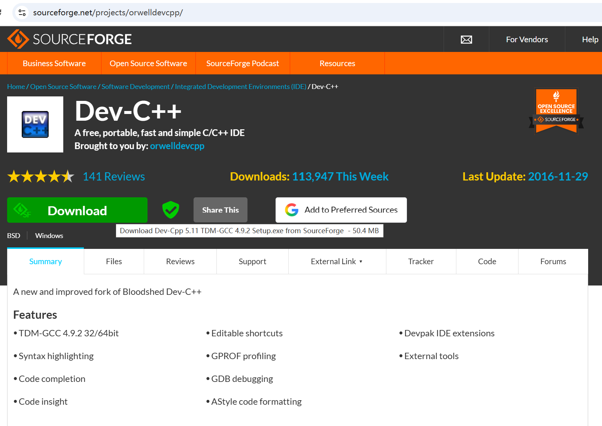
三、安装步骤
1启动安装程序
双击 .exe 文件，等待安装程序加载（约几十秒）。
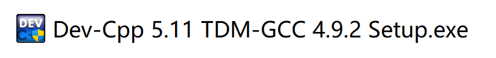
2选择安装语言
安装程序支持多国语言。选择 English，点击 OK。
注意
安装过程中的语言选择仅影响安装向导界面，不影响软件界面。
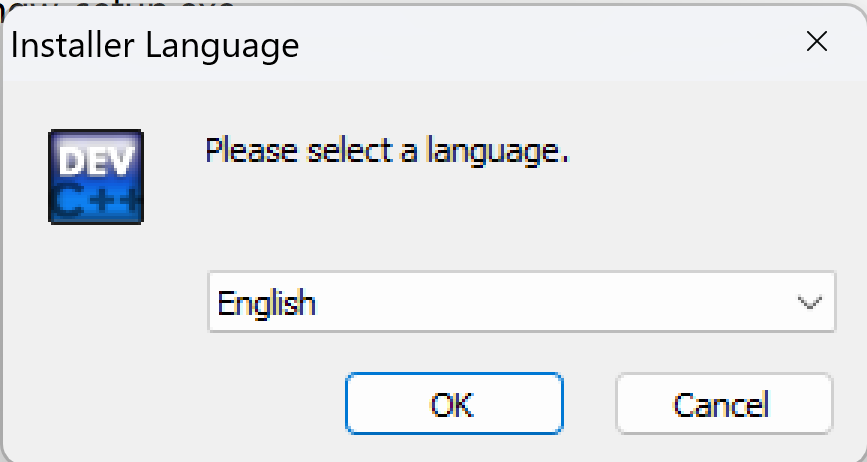
3同意许可协议
阅读协议后，点击 I Agree。
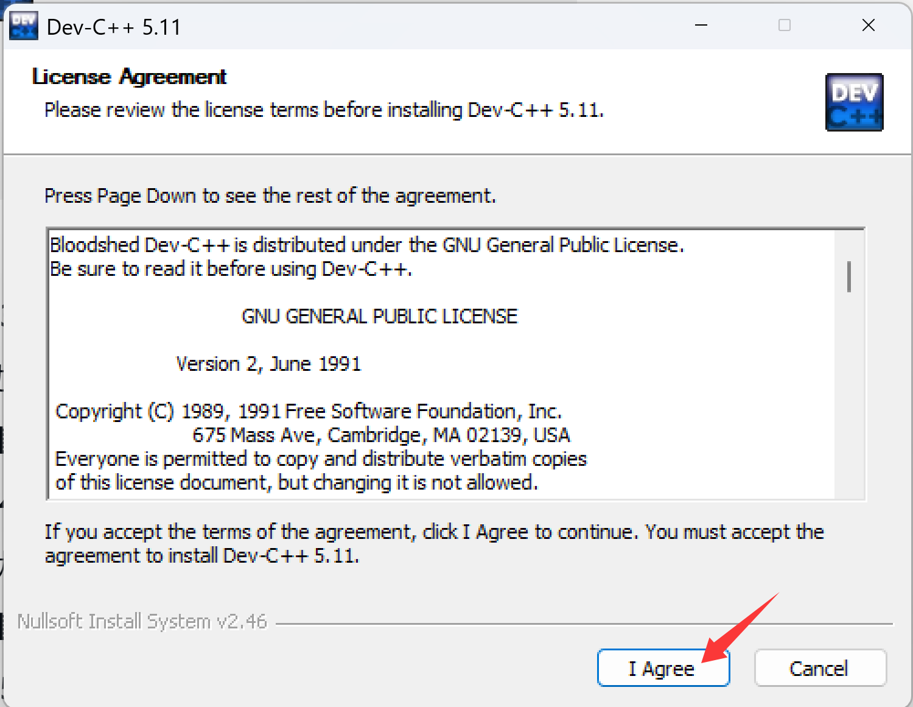
4选择安装组件
保持默认，选择 Full（全部安装），点击 Next。
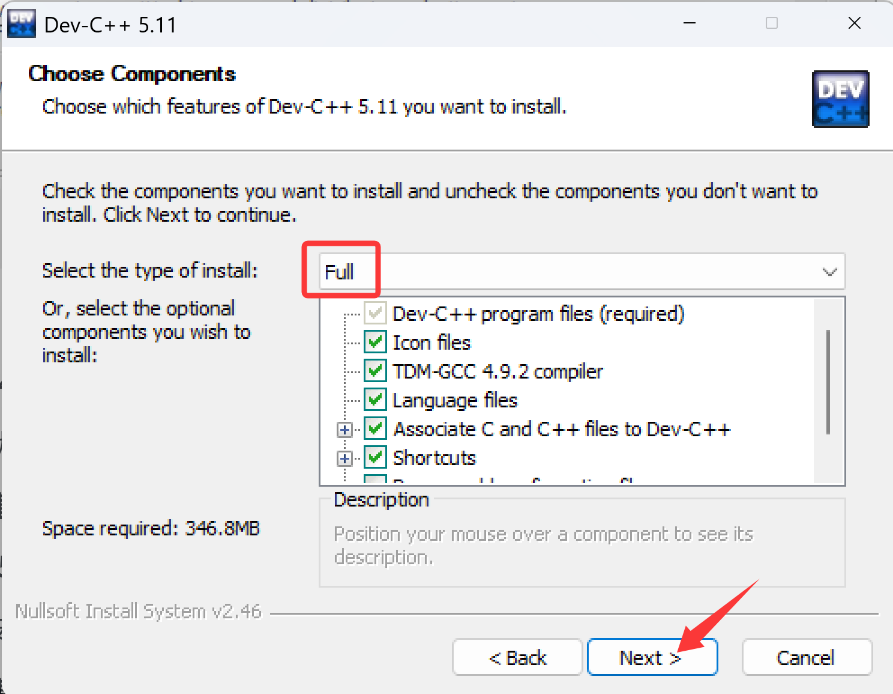
5选择安装路径
建议安装在非系统盘，如 D:\Dev-Cpp。路径中不要包含中文。点击 Install 开始安装。
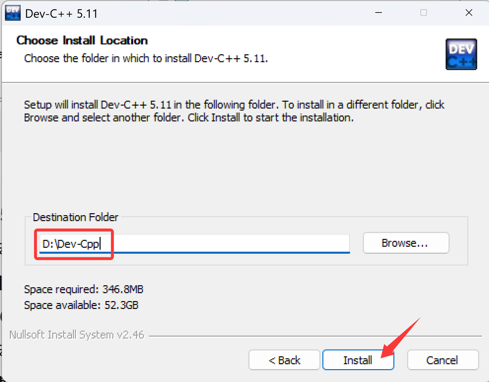
6等待安装完成
等待安装完成后点击 Finish。
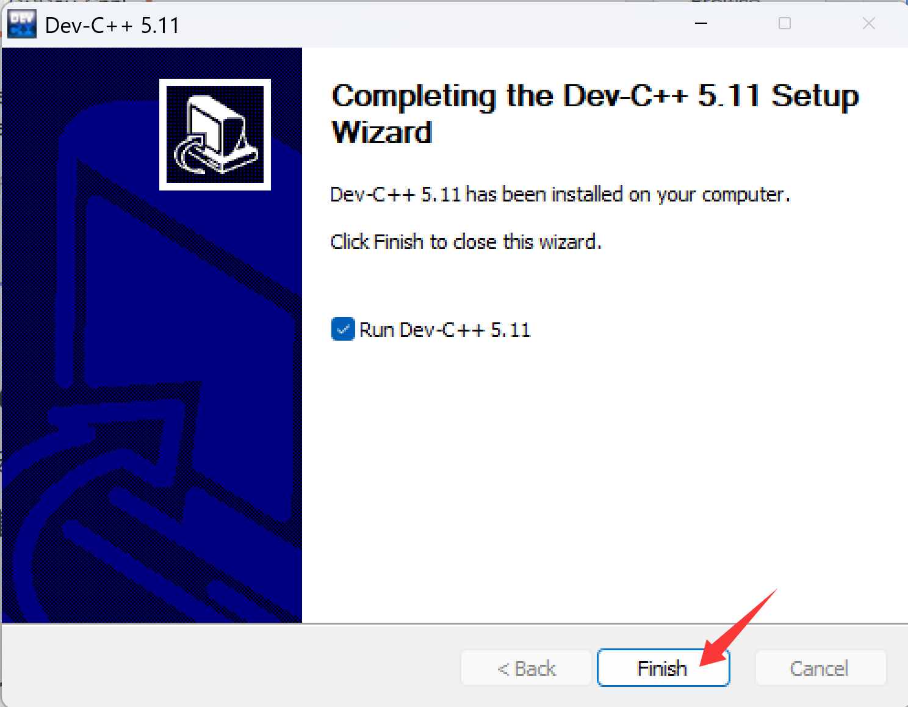
四、首次启动与汉化
1启动软件
双击桌面 Dev-C++ 图标。
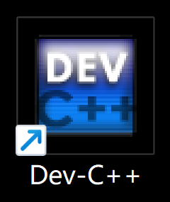
首次启动会弹出语言选择界面，选择简体中文，点击 Next。
手动切换中文
如果首次启动时未选择中文，可手动切换：
- 点击顶部菜单 Tools（工具）→ Environment Options（环境选项）。
- 在 General（常规）选项卡中找到 Language（语言）下拉框，选择 Chinese (Simplified)，点击 OK 保存。
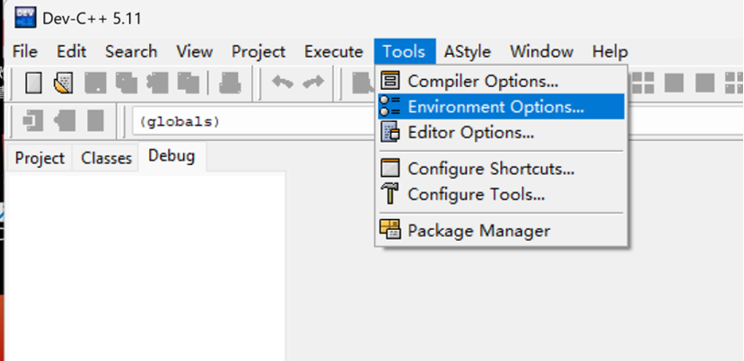
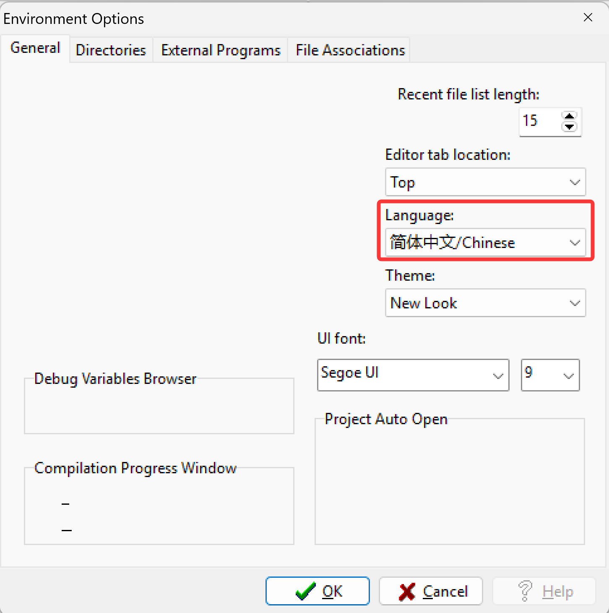
五、中文乱码解决方案
方法一：另存为 GB2312 编码
- 进入 文件 → 另存为。
- 在弹出窗口右下角的编码下拉框中，选择 Chinese GB2312。
- 保存后重新编译运行。
方法二：配置编译器选项
- 进入 工具 → 编译选项。
- 勾选「编译时加入以下命令」。
- 在输入框中填入：
-fexec-charset=gbk
- 点击确认，重新编译。
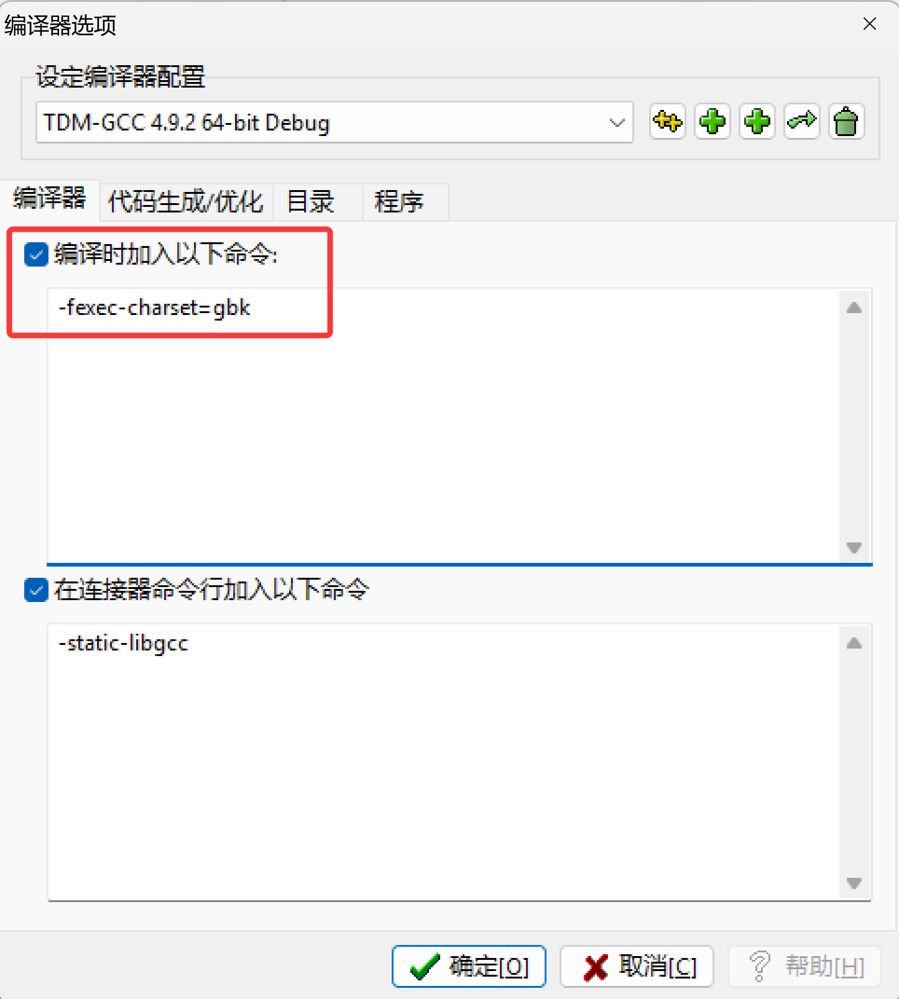
六、编译运行与调试
- 编译：按
F9（或点击菜单 运行 → 编译）。 - 运行：按
F10（或点击 运行 → 运行）。 - 编译运行：按
F11一键完成编译和运行。
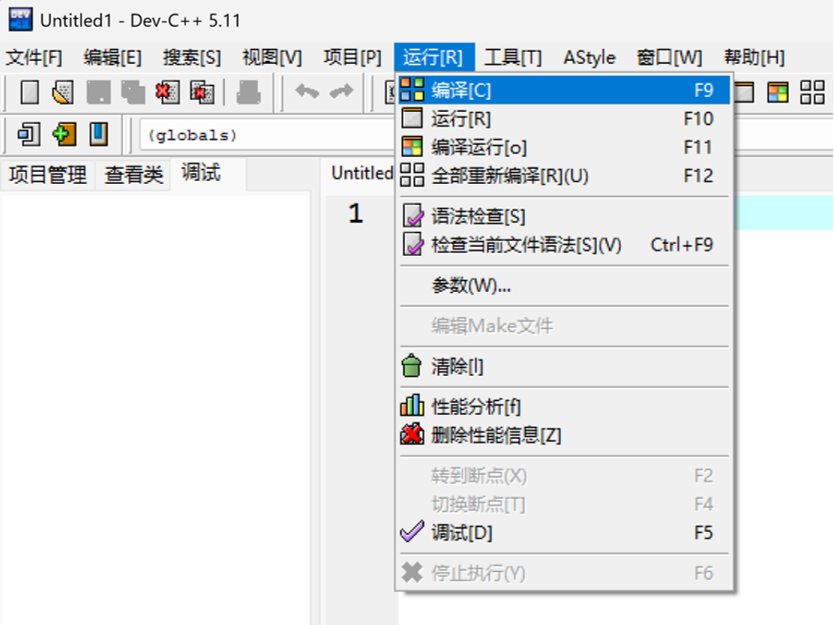
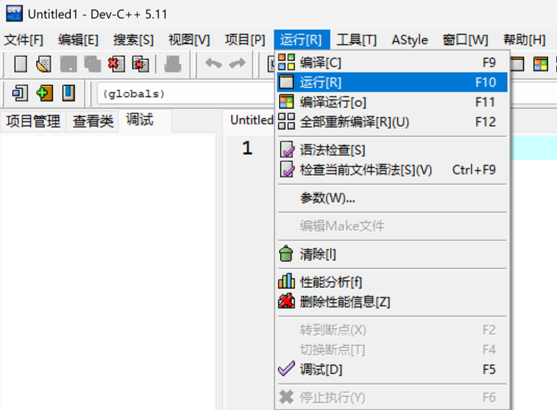
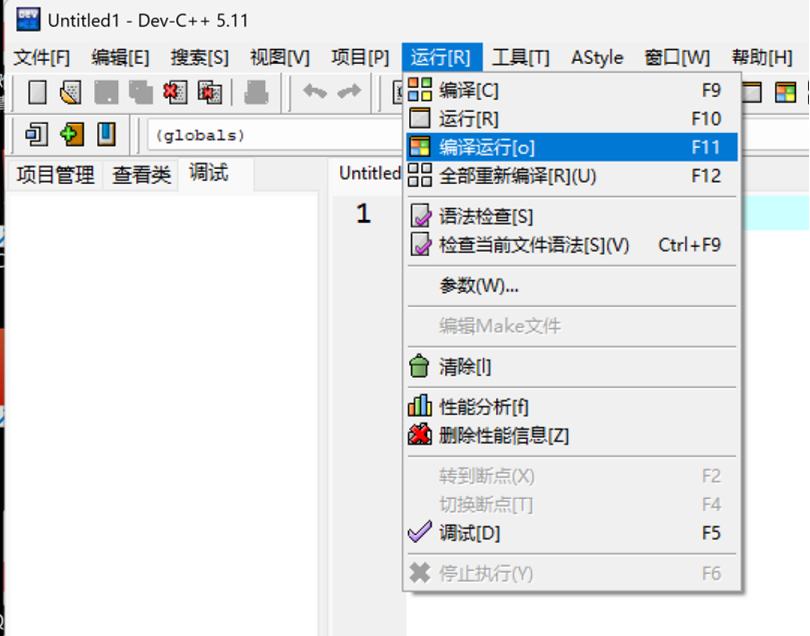
防止控制台闪退
在
return 0; 之前添加 getchar();。
调试配置
- 进入 项目 → 项目属性 → 编译器，勾选「生成调试信息」（Generate debugging information），否则断点可能无效。
- 设置断点：在代码行号左侧单击，出现红色圆点表示断点已生效。
- 启动调试：按
F5启动调试。
常用调试快捷键
| 操作 | 快捷键 |
|---|---|
| 单步进入 | F7 |
| 单步跳过 | F8 |
| 继续 | Ctrl + F5 |
| 停止 | Alt + F5 |
观察变量
在代码中选中变量，右键选择「添加查看」，调试时可在左侧面板看到变量值。
截图建议：调试工具栏和变量查看面板
七、常见问题排查
| 问题 | 原因 | 解决方案 |
|---|---|---|
| 安装时中文乱码 | 安装程序编码问题 | 安装过程选择英文，安装后再切换中文 |
| 编译报错找不到头文件 | 未创建 C 项目，直接打开了 .cpp 文件 |
新建项目时选择「C 项目」 |
| 中文乱码 | 文件编码与编译器编码不一致 | 按第五章方法一或方法二配置 |
| 断点无效 | 未启用调试信息 | 项目属性中勾选「生成调试信息」 |
| 控制台闪退 | 程序正常结束 | 添加 getchar(); 或观察 |